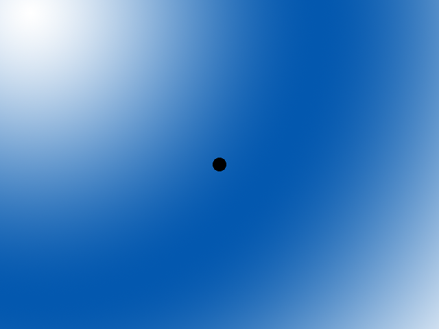
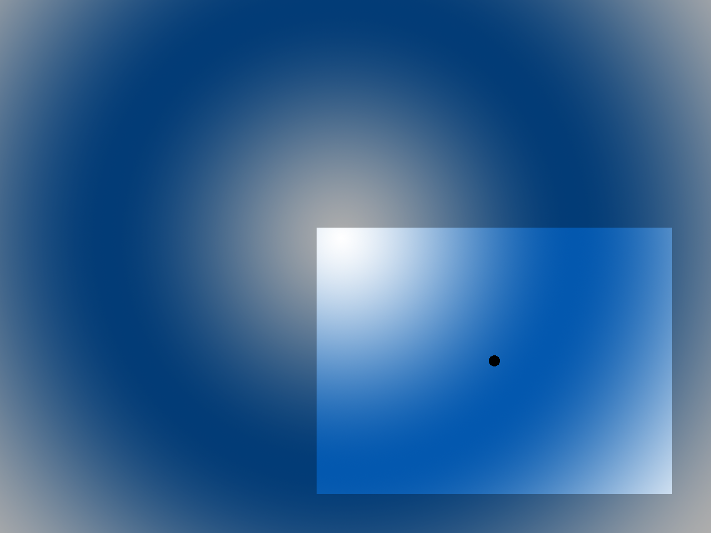

Scrolling

Last Updated: Jun 8th, 2025
Up until now we've only be able to draw things as large as the screen. Here we're going to be drawing a level larger than the screen and scrolling through it with a camera.
To have a camera to scroll a level larger than the screen you need to have a rectangle to define the position and dimensions of the camera:
And all you have to do is draw everything relative to the camera, making sure to clip out everything not seen by the camera:

And all you have to do is draw everything relative to the camera, making sure to clip out everything not seen by the camera:
/* Constants */
//Screen dimension constants
constexpr int kScreenWidth{ 640 };
constexpr int kScreenHeight{ 480 };
constexpr int kScreenFps{ 60 };
//Level dimensions
constexpr int kLevelWidth{ 1280 };
constexpr int kLevelHeight{ 960 };
Since we're going to be moving around in a space larger than the screen, we need to define the level dimensions separately.
class Dot
{
public:
//The dimensions of the dot
static constexpr int kDotWidth = 20;
static constexpr int kDotHeight = 20;
//Maximum axis velocity of the dot
static constexpr int kDotVel = 10;
//Initializes the variables
Dot();
//Takes key presses and adjusts the dot's velocity
void handleEvent( SDL_Event& e );
//Moves the dot
void move();
//Shows the dot on the screen
void render( SDL_FRect camera );
//Position accessors
int getPosX();
int getPosY();
private:
//The X and Y offsets of the dot
int mPosX, mPosY;
//The velocity of the dot
int mVelX, mVelY;
};
Our dot class now takes a camera for rendering and has accessor functions to get the dot's position.
void Dot::move()
{
//Move the dot left or right
mPosX += mVelX;
//If the dot went too far to the left or right
if( ( mPosX < 0 ) || ( mPosX + kDotWidth > kLevelWidth ) )
{
//Move back
mPosX -= mVelX;
}
//Move the dot up or down
mPosY += mVelY;
//If the dot went too far up or down
if( ( mPosY < 0 ) || ( mPosY + kDotHeight > kLevelHeight ) )
{
//Move back
mPosY -= mVelY;
}
}
void Dot::render( SDL_FRect camera )
{
//Show the dot
gDotTexture.render( static_cast( mPosX ) - camera.x, static_cast( mPosY ) - camera.y );
}
int Dot::getPosX()
{
return mPosX;
}
int Dot::getPosY()
{
return mPosY;
}
Our changes to the dot are fairly simple. When moving, instead of bounding the motion within the screen, we check if the dot has moved outside of the level. When rendering, we render the dot relative to the position of the camera, which we do by subtracting the position of the dot
by the position of the camera.
Lastly, we have some functions to get the dot position.
Lastly, we have some functions to get the dot position.
//The quit flag
bool quit{ false };
//The event data
SDL_Event e;
SDL_zero( e );
//Timer to cap frame rate
LTimer capTimer;
//Dot we will be moving around on the screen
Dot dot;
//Defines camera area
SDL_FRect camera{ 0.f, 0.f, kScreenWidth, kScreenHeight };
Before going into our main loop, we declare an SDL_FRect to define the camera.
//Update dot
dot.move();
//Center camera over dot
camera.x = static_cast( dot.getPosX() + Dot::kDotWidth / 2 - kScreenWidth / 2 );
camera.y = static_cast( dot.getPosY() + Dot::kDotHeight / 2 - kScreenHeight / 2 );
//Bound the camera
if( camera.x < 0 )
{
camera.x = 0;
}
else if( camera.x + camera.w > kLevelWidth )
{
camera.x = kLevelWidth - camera.w;
}
if( camera.y < 0 )
{
camera.y = 0;
}
else if( camera.y + camera.h > kLevelHeight )
{
camera.y = kLevelHeight - camera.h;
}
When the dot moves, we want to center it over the dot. We also don't want the camera to show anything that's outside of the bounds of the level so after it moves we keep it inside the level.
//Fill the background
SDL_SetRenderDrawColor( gRenderer, 0xFF, 0xFF, 0xFF, 0xFF );
SDL_RenderClear( gRenderer );
//Show background
gBgTexture.render( 0.f, 0.f, &camera );
//Render dot
dot.render( camera );
//Update screen
SDL_RenderPresent( gRenderer );
Lastly, we make sure to only render the part of the background shown by the camera and we show the dot relative to the camera.
Addendum: Typical camera functionality
There is some things most cameras do that we didn't do here for the sake of brevity but we'll cover them here.
In most game engines, we typically make sure objects are in the camera's field of view before rendering them. With 3D engines especially, this is an important optimization but it is definitely useful in 2D engines also. The way you do it is by checking if the object collides with the AABB of the 2D camera. As you would imagine, this does add some overhead which is worth it if you have a lot of objects but wouldn't help much if you're only moving a single dot around a level.
We only used an
In most game engines, we typically make sure objects are in the camera's field of view before rendering them. With 3D engines especially, this is an important optimization but it is definitely useful in 2D engines also. The way you do it is by checking if the object collides with the AABB of the 2D camera. As you would imagine, this does add some overhead which is worth it if you have a lot of objects but wouldn't help much if you're only moving a single dot around a level.
We only used an
SDL_FRect for our camera but we probably should have created a separate camera class to keep the camera data and the code that moves the camera together. Camera behavior can get real complex with things like camera animation and the tracking logic can
also warrant dedicated class. However, as always remember YAGNI.
Addendum: Decoupling rendering data from rendering
As mentioned in previous tutorials, it's considered good practice to separate the data of what needs to be rendered from the code that actually renders it if you want code that scales. This tutorial is a perfect example of why.
Right now we only have two objects that need to be rendered relative to the camera: the dot and screen. However, when you have dozens if not hundreds of objects that need to be rendered relative to the camera, having to repeatedly code the code to render objects relative to the camera for each type of object will quickly become tedious. And what happens if you have multiple cameras?
As always though, remember YAGNI. Scalability comes at a cost and if you're going to just throw your code out after the project is done for a Nasty Tetris Project, just do it the fastest way possible.
Right now we only have two objects that need to be rendered relative to the camera: the dot and screen. However, when you have dozens if not hundreds of objects that need to be rendered relative to the camera, having to repeatedly code the code to render objects relative to the camera for each type of object will quickly become tedious. And what happens if you have multiple cameras?
As always though, remember YAGNI. Scalability comes at a cost and if you're going to just throw your code out after the project is done for a Nasty Tetris Project, just do it the fastest way possible.